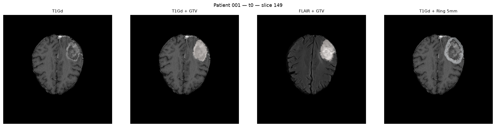
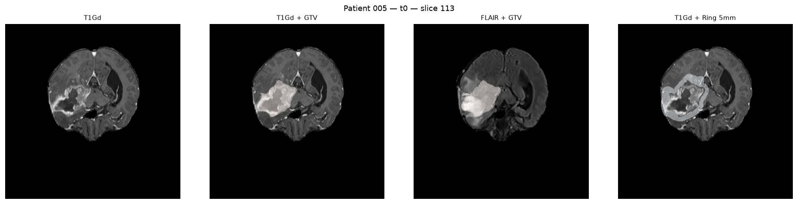
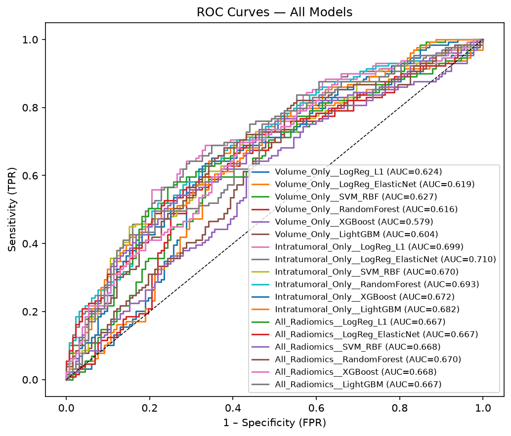
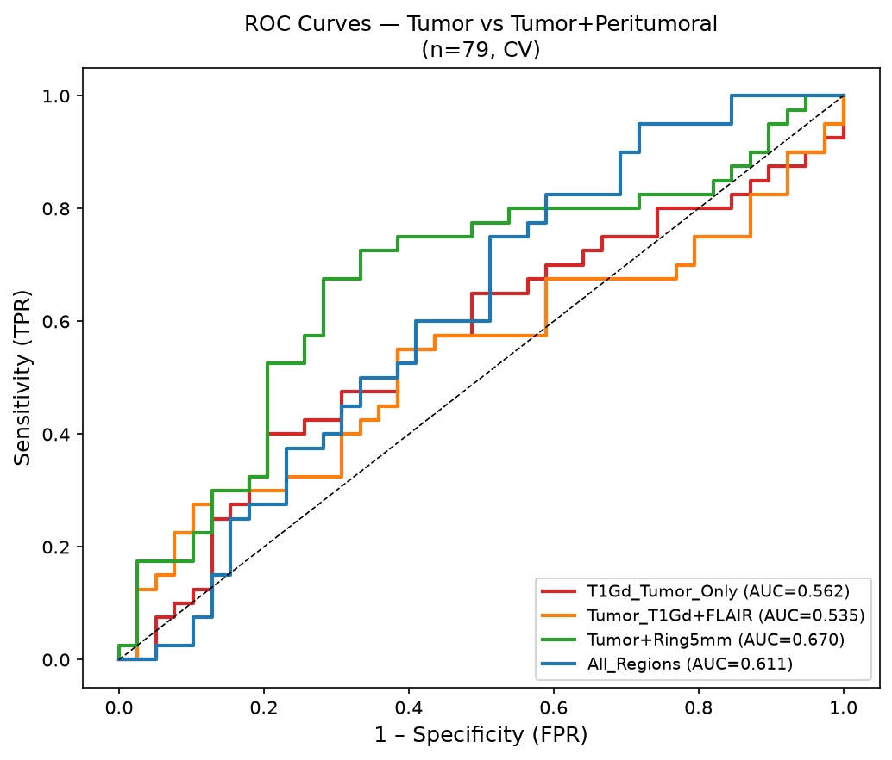
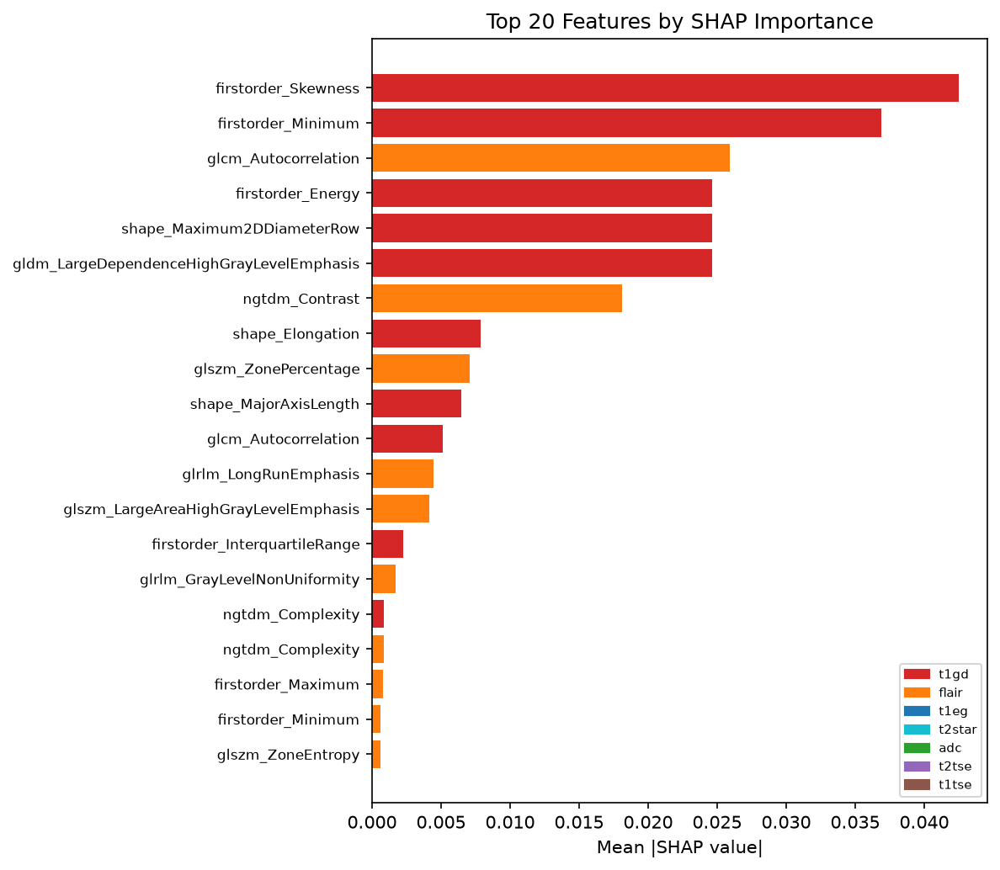
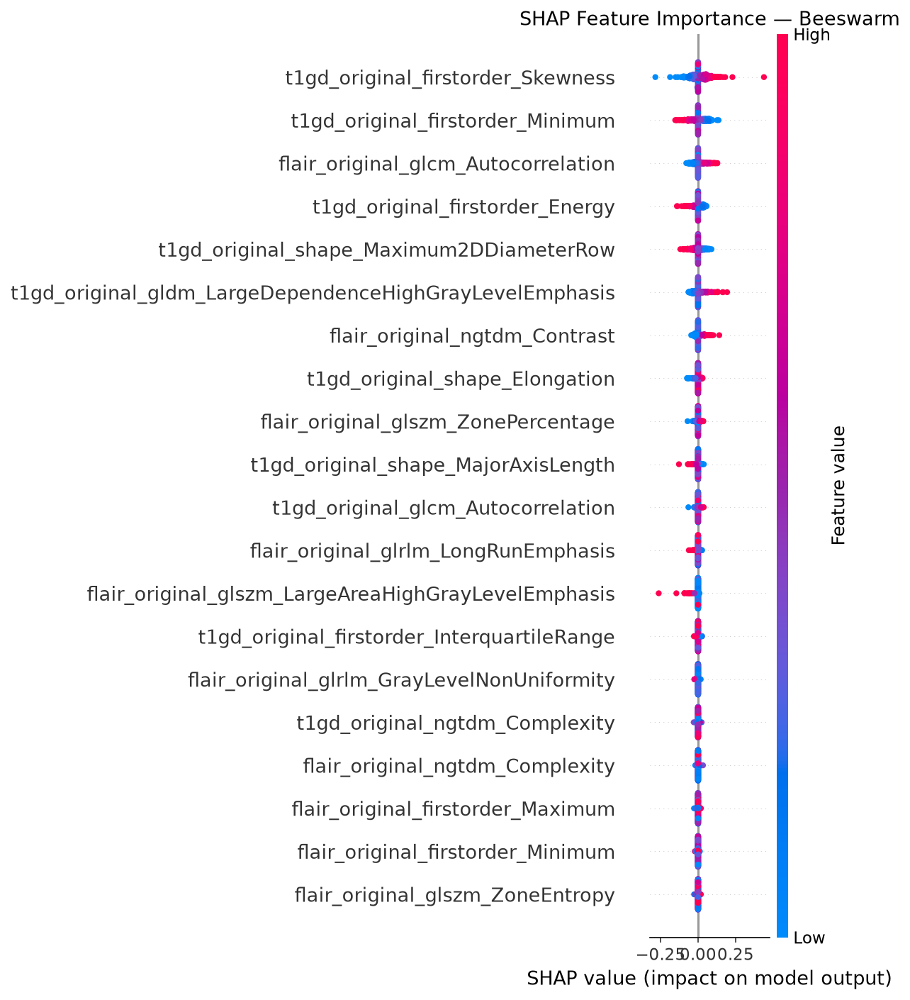
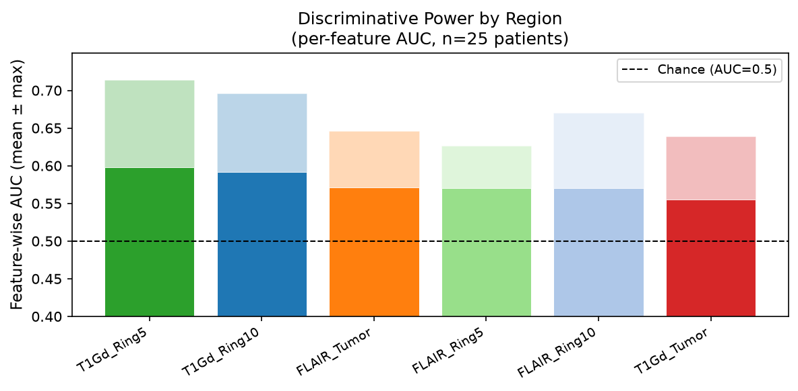
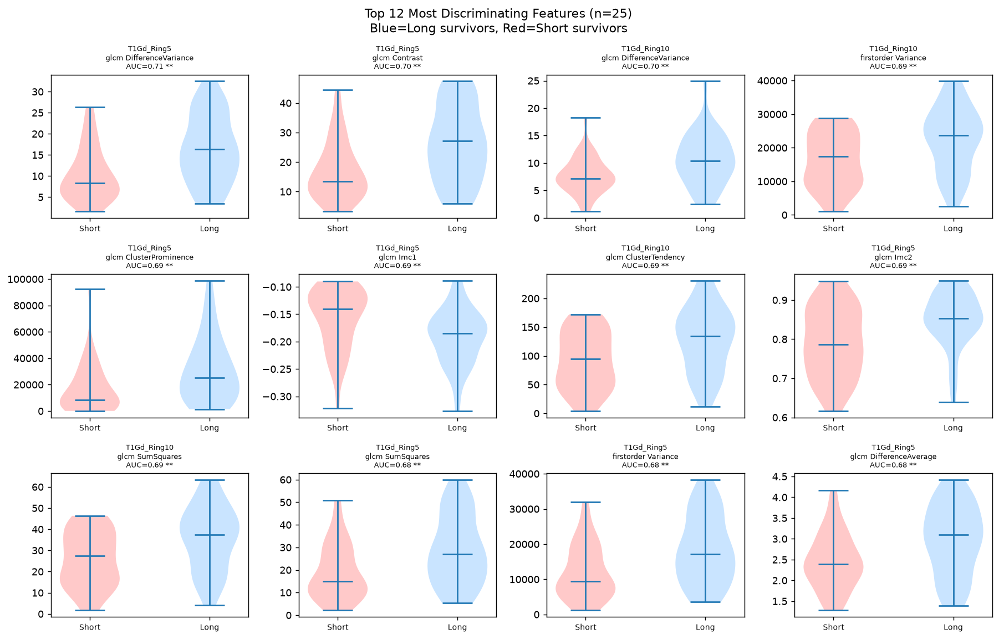
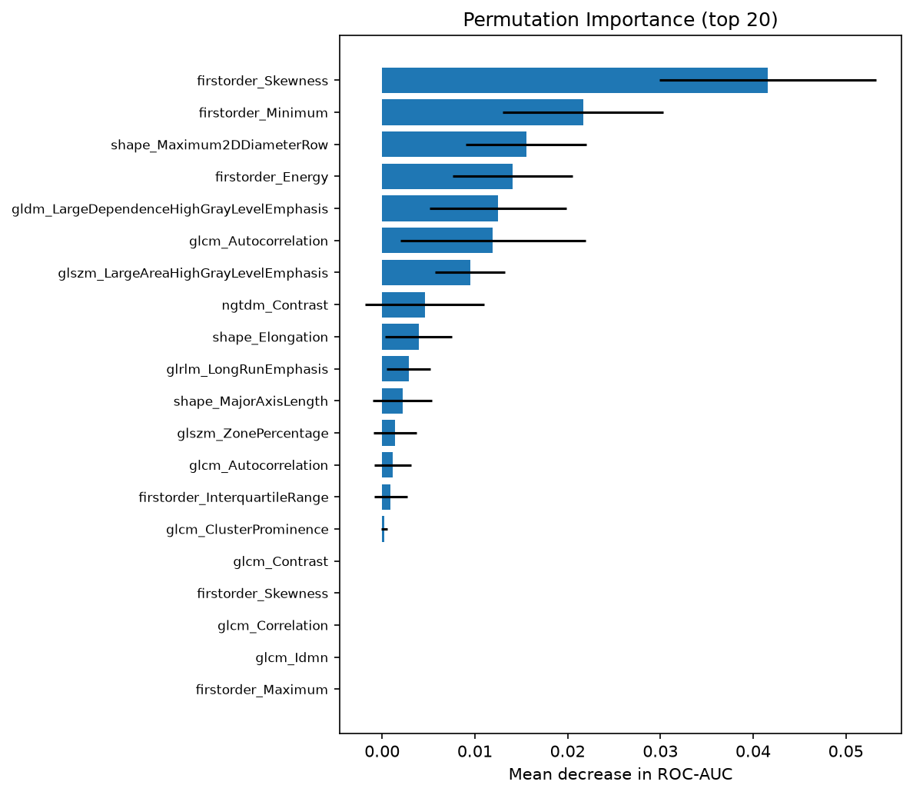

AI-Driven MRI Radiomics
for Glioblastoma
for Outcome Prediction and Explainable Machine Learning
Why Is GBM Hard to Assess?
The Clinical Problem
- Glioblastoma (WHO Grade 4) — most aggressive primary brain tumour
- Median overall survival: 14–16 months despite Stupp protocol
- Current imaging standard: RANO criteria — measure contrast-enhancing volume on T1Gd
- Problem: tumour infiltrates beyond the visible boundary
- Visible enhancement = breakdown of blood-brain barrier, not all tumour cells
FLAIR MRI shows a broader region of signal abnormality beyond the enhancing tumour — this tissue contains infiltrating cells, oedema, and microenvironmental changes invisible to clinical assessment.
What MRI Sequences Tell Us
Shows active blood-brain barrier breakdown. Bright = enhancing tumour core. Standard for diagnosis and treatment response.
Fluid-attenuated inversion recovery. Shows broader infiltration zone, oedema, and non-enhancing tumour. Extends well beyond T1Gd enhancement.
The tissue between T1Gd edge and FLAIR boundary contains prognostic signal that visual assessment ignores.
What Is Radiomics?
Radiomics is the automated extraction of hundreds of quantitative features from medical images. Unlike simple measurements (volume, diameter), radiomics captures the texture, heterogeneity, and spatial patterns of tissue at sub-voxel level.
Feature Categories
Why Radiomics for GBM?
- Non-invasive — uses existing clinical scans
- Captures intratumour heterogeneity reflecting cell density, necrosis, vascularisation
- Can encode microenvironmental signals in peritumoral tissue
- Reproducible when standardised (IBSI-compliant)
Aerts et al. (Nature Communications, 2014) showed that 4 radiomic features outperformed clinical prognostic models in lung cancer — launching the radiomics field in oncology.
This Project: PyRadiomics
- Open-source, Python, IBSI-compliant
- 6 image×mask combinations
- 56 features per region × 6 regions = 336 features per patient
Dataset: TCIA CFB-GBM
The Collaborative Feasibility for Brain GBM (CFB-GBM) collection is publicly available through The Cancer Imaging Archive (TCIA). It contains multiparametric MRI, radiotherapy planning data, and clinical outcomes for glioblastoma patients.
Modalities Used
- T1Gd: contrast-enhanced T1 — tumour core delineation
- FLAIR: peritumoral oedema and infiltration
- GTV mask (NIfTI): gross tumour volume from radiotherapy planning
Outcome Label
Binary OS classification: Long survivors (≥ 55 weeks) vs Short survivors (< 55 weeks). Balanced: 40 long / 39 short (79-patient cohort).
Dataset Pipeline
Privacy note: Only code and anonymised summary statistics are shared publicly. Raw MRI data remains on TCIA and is not included in the repository.
Complete AI-Radiomics Pipeline
- Download NIfTI from TCIA
- Inspect image dimensions & spacing
- Organise patient/timepoint hierarchy
- Verify GTV mask integrity
- Load GTV mask (NIfTI)
- Morphological dilation: 5mm, 10mm
- Ring = dilation − inner mask
- QC 4-panel figures per patient
- PyRadiomics v3.0.1 (IBSI)
- Resample to 3×3×3 mm
- 6 image×mask combinations
- Shape + First-order + GLCM
- Imputation + StandardScaler
- SelectKBest (top-10)
- 5-fold stratified CV
- LogReg, SVM, RF, XGBoost
- SHAP TreeExplainer / KernelExplainer
- Beeswarm + bar + waterfall plots
- Permutation importance
- Region-coloured feature attribution
- Per-feature univariate AUC
- Region discriminative power
- Violin + box plots by OS class
- Tumour vs ring comparison
All steps are implemented as standalone Python scripts. Fully reproducible from a single conda activate cfb-gbm-radiomics environment. See GitHub repository for full pipeline.
Beyond Visible Segmentation: Peritumoral Rings
The key methodological innovation is creating concentric rings around the tumour to capture tissue in the infiltration zone that is invisible to clinical assessment.
Region Definition
Biological Rationale
- GBM infiltrates 2–3 cm beyond visible enhancement
- FLAIR oedema reflects cell infiltration, disrupted vasculature, hypoxia
- Peritumoral tissue texture may encode IDH status, MGMT methylation signals
- Ring 5mm = highest density of infiltrating cells
- Ring 10mm = tumour microenvironment / immune response zone
QC Verification — Patient 001
4-panel QC figure generated automatically for all 79 patients:

QC Figure: results/figures/qc/001_t0_qc.png
Shows T1Gd | T1Gd+GTV | FLAIR+GTV | T1Gd+Ring5mm
MRI Examples: Tumour and Peritumoral Regions
QC figures automatically generated for all 79 patients. Each shows one axial slice through the tumour centre.


The FLAIR signal abnormality (panel 3) extends significantly beyond the contrast-enhancing GTV (panel 2). This is the region our peritumoral rings capture — tissue that is abnormal but not contoured in clinical practice.
Panel 4 (blue overlay) shows Ring 5mm surrounding the tumour. This annular region is where infiltrating tumour cells are most dense, and where our analysis finds the highest discriminative power (mean AUC 0.598).
Radiomic Feature Extraction
Extraction Settings
| Parameter | Value |
|---|---|
| Tool | PyRadiomics v3.0.1 |
| Standard | IBSI-compliant |
| Resampling | 3×3×3 mm isotropic |
| Bin width | 25 HU |
| Image types | Original only |
| Features / region | 56 |
| Total features | 336 (6 regions) |
6 Image × Mask Combinations
Feature Classes Extracted
Resampling note: Original images are 512×512×208 at 0.5mm spacing (55M voxels). Resampling to 3mm reduces to ~4M voxels, enabling practical extraction in ~30 sec/patient while maintaining clinically relevant resolution.
Machine Learning: Design and Validation
Prediction Task
Binary classification: Long vs Short overall survival. Median split at 55 weeks (79-patient NIfTI cohort) and 50.5 weeks (261-patient TSV cohort).
Models Compared
- Logistic Regression L1 — sparse, interpretable, handles correlated features
- SVM-RBF — handles non-linear boundaries, kernel trick
- Random Forest — ensemble of decision trees, robust to noise
- XGBoost — gradient boosting, strong baseline performance
Pipeline per Model
Validation Strategy
Training set never used for evaluation. Feature selection inside each fold (no leakage). Class balance maintained across folds.
500 bootstrap iterations on held-out predictions. Quantifies uncertainty — essential for small cohorts where single-run AUC is unreliable.
AUC (primary), Balanced Accuracy, Sensitivity, Specificity, F1, PR-AUC.
Anti-overfitting measures: L1/ElasticNet regularisation, max_depth limits for trees, class-balanced weighting, feature selection inside CV.
Results: 261-Patient Cohort (TSV Features)
| Experiment | Best Model | Features | AUC | 95% CI | Balanced Acc | F1 |
|---|---|---|---|---|---|---|
| Volume Only | SVM-RBF | 23 | 0.627 | 0.562–0.692 | 0.590 | 0.590 |
| All Radiomics | RandomForest | 139 | 0.670 | 0.607–0.735 | 0.640 | 0.644 |
| Intratumoral Only | LogReg ElasticNet | 59 | 0.710 | 0.648–0.767 | 0.670 | 0.659 |
Intratumoral radiomics (T1Gd + FLAIR texture) outperforms volume-only by +13.2% relative AUC improvement (0.627 → 0.710). This confirms that texture heterogeneity within the visible tumour carries prognostic information beyond size.
With n=261 and 59 features, sparse regularisation (ElasticNet) selects a small subset of the most discriminating features. This avoids overfitting better than the ensemble methods which require more data.
Results: Peritumoral Analysis — 79 Patients
ML Comparison: Tumor vs Tumor+Ring
| Region Configuration | AUC | 95% CI |
|---|---|---|
| T1Gd Tumor Only | 0.562 | 0.437–0.688 |
| Tumor T1Gd + FLAIR | 0.535 | 0.405–0.664 |
| Tumor + Ring 5mm | 0.670 | 0.545–0.794 |
| All Regions (6) | 0.611 | 0.500–0.738 |
Adding Ring 5mm features: AUC 0.562 → 0.670
LogReg L1 (sparse) wins — suggesting a small number of peritumoral features drive the prediction.
Per-Feature Discriminative Power by Region
| Region | Mean AUC | Max AUC |
|---|---|---|
| T1Gd Ring 5mm | 0.598 | 0.714 |
| T1Gd Ring 10mm | 0.591 | 0.696 |
| FLAIR Tumor | 0.571 | 0.646 |
| FLAIR Ring 5mm | 0.570 | 0.626 |
| FLAIR Ring 10mm | 0.570 | 0.670 |
| T1Gd Tumor | 0.556 | 0.639 |
T1Gd rings outperform FLAIR — consistent with T1Gd capturing vascular permeability changes in the peritumoral microenvironment that are prognostically relevant.
ROC Curves
261-Patient Cohort

79-Patient Peritumoral Comparison

The green curve (Tumor+Ring 5mm, AUC=0.670) clearly separates from red (Tumor Only, AUC=0.562), confirming that peritumoral features add independent prognostic value beyond the visible tumour boundary.
Explainable AI: SHAP Analysis
What Is SHAP?
SHapley Additive exPlanations assign each feature a contribution value to the model's prediction for each individual patient. Based on game theory (Shapley values).
- Positive SHAP: feature pushes prediction toward "Long survivor"
- Negative SHAP: feature pushes toward "Short survivor"
- Mean |SHAP|: average absolute importance across all patients
With 336 features, knowing which features and which regions drive predictions is essential for biological interpretation. SHAP lets us ask: "Is the model using peritumoral texture or intratumoral shape?"

SHAP Summary Plot (Beeswarm)

Reading the plot: Features at the top are most important. Dot colour shows the feature value (red=high, blue=low). Horizontal position shows SHAP value direction.
Feature Analysis: Which Region Matters Most?


T1Gd Ring 5mm and Ring 10mm consistently rank highest in discriminative power. The violin plots show that specific GLCM texture features in the peritumoral zone differ significantly between long and short survivors — providing a biological basis for the ML improvement.
The AI Component — Is This AI?
- Logistic Regression with L1/ElasticNet regularisation
- Support Vector Machine (RBF kernel)
- Random Forest (200 trees)
- XGBoost gradient boosting
- Automated feature selection (ANOVA F-score)
All are classical AI/ML algorithms learning patterns from labelled patient data.
- SHAP (SHapley Additive exPlanations)
- TreeExplainer for tree models
- KernelExplainer for linear models
- Per-patient attribution maps
- Permutation importance
XAI is AI that explains its own reasoning — critical for medical applications.
- 3D ResNet architecture (train_deep_embeddings.py)
- 2-channel input: T1Gd + FLAIR patches
- 128-dim learned embeddings
- Requires 48GB NVIDIA GPU
- Combines with handcrafted features
Deep learning extracts features without manual engineering — end-to-end AI.
Yes, this is AI. The pipeline implements supervised machine learning, automated feature selection, and explainable AI — three core pillars of modern AI in medical imaging. The ML models learn to predict patient survival directly from pixel-level image features, without any manual rule-based classification.
Model Robustness: Permutation Importance

What Is Permutation Importance?
A model-agnostic method to measure feature importance: randomly shuffle each feature, measure the drop in AUC. Features that cause a large drop are truly important — they cannot be replaced by noise.
Why This Matters
- More reliable than tree-based feature importance (which can be biased by correlated features)
- Directly measures impact on prediction performance
- Confirms SHAP findings independently
Features with error bars overlapping zero contribute noise rather than signal. The features with the largest reliable importance are the true drivers of survival prediction.
Limitations and Honest Assessment
Statistical Limitations
- Small sample size — n=79 for peritumoral analysis. Wide 95% CIs reflect genuine uncertainty. AUC=0.670 CI [0.545–0.794] includes 0.5 at the lower bound.
- Single cohort — No external validation. Results may not generalise to other institutions or protocols.
- Feature selection inside CV — Reduces but does not eliminate overfitting risk with many features.
Clinical Limitations
- RTSTRUCT masks — Radiotherapy GTV contours, not pathology-confirmed tumour boundaries
- OS binary label — Median split is arbitrary; continuous survival would be more informative
- Heterogeneous acquisition — Multi-scanner, multi-protocol data despite z-score normalisation
- NOT a clinical tool — Educational research prototype only
Future Directions
Conclusions
What Was Built
- Complete reproducible AI-radiomics pipeline (Python, open-source)
- Peritumoral ring analysis — a key novel component
- SHAP explainability — biologically interpretable results
- All code on GitHub — fully reproducible
Repository
[github.com/your-username/cfb-gbm-ai-radiomics]
conda activate cfb-gbm-radiomics
python src/create_regions_nifti.py ...